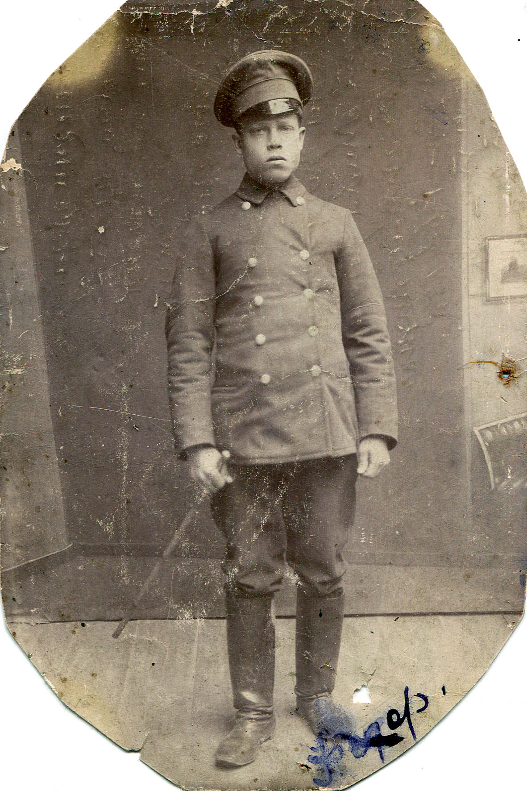

Велике село Шамраївка розкинулось над річкою Раставицею. Понад берегами річки в садках вишневих густенько на маленьких клаптиках присадибної землі біліють селянські хатки. Село Шамраївка дуже старовинне. По переказам старих дідів та деяких данних з архівів, воно засноване ще в 1230 роках якимсь першим забудовником козаком Шамраем по прізвищу. На північ від Шамраївки був ліс. Великий дубовий ліс який тягнувся від Білої Церкви до міста Сквира через село Фурси та село Шамраївку. На південно-захід теж був великий дубовий ліс. А на північно-захід стояла цукроварня Браніцької. А на південь від села Шамраївки - панські землі, панські поля.

По під самим селом стояв підварок (Економія) панські будівлі, стайні, комори, воловні та будинки в яких жили пани. Навкруги куди не кинеш оком, розкинулись панські степи. Це все було панське - степи, лани, ліса та річки і всі його неозорі простори. Степи вкриті бур'янами, ковилем та дикими травами, які віками не бачили плуга. Мастка, чорна земля здавалось просила, щоб її виорали, обробили і засіяли. В чотирьох кілометрах від села Шамраївки на неозорих степах, над річкою Сквирка був кінний завод Стадниця і оце все було пані графіні Марії Єстафовни Браніцької.
В ці вже роки 1912 м. Стадниця була побудована. Нові, красиві будинки з цегли криті бляхою та червоною черепицею. Черепицю десь завозили із Варшави. Це все було відбудовано після пожежі. Десь в 1876-1880 роках Стадниця згоріла до тла. Вона була дерев'яна і крита соломою та очеретом. Багато коней - попеклися, а бувший директор конного заводу пан Сінькевич отримав розрив серця.
У 1912 році мені теж прийшлось випробувати цієї роскоші. Виїзжати молодих коней в Стадниці. Прослужив я на цих верхових конях по 1917 рік. Восени звільнився поїхав у Київ.
Тяжка це була праця. На кожного наїзника покладалась така робота: три коня поїть, кормить, носить воду для них, вичищати гній і на ношах відносити у гноярку. Об'їздить трьох коней по півтори години, почистить щоб не було і пилинки, відмить копита і помастить копитною мастею. За цю роботу за місяць я одержував 2 карбованці і панські харчі. Рано і ввечері куліш пшоняний з олією на обід борщ. А хліб такий що і в пельку не можна упхнуть щоб його ковтнуть. Ще при Стадниці держали сто собак гончих панам для розваги. Їх кормили теж таким кулішем, тільки що з мясом кінським, яке доставляли. Скуповували по ярмарках калічені коні і здавали на собачу кухню по три карбованця за коняку.
Виїзжені коні переводились в місто Біла Церква в палацеву стайню і там продавались по тисячу карбованців за жеребчика. Купляли козаки Донські, Кубанські, Терські, Уральські для станиць як виробників.
Блискуча стрічка оксамиту. Дві години їзди від Києва і автобус зупиниться в Білій Церкві. Це одне з найстаріших міст. Ще 1032 року на лівому березі чарівної річки Рось, Ярослав Мудрий побудував його. Місто на честь християнського імені Юрія було названо місто Юр'їв. А в 1050 році Ярослав Мудрий звів у Юр'еві єпіскопську білокаменну церкву, яка була розташована на височині і яскраво вирізнялась серед невеликих будівель. Люди називали її білою церквою. Так згодом і стало називатись місто. Тривалий час мешканці Білої Церкви спостерігали за джерелами які пробивались з під землі в парку "Олександрія". Річка Рось лащиться та в'ється навколо Білої Церкви. Стелиться вінком навколо минулого, сучасного та майбутнього цього краю. Тече собі далі призбірує води Роськи, Оріхової, Раставиці, Камянки та віддає Дніпрові. Мова піде про дендропарк "Олександрія". Розташований він у північно-західній частині міста, на площі 400 гектарів. На його теріторії понад 20 ставків. Насадження з екзотичних та місцевих порід. Парк створено в 1797-1798 роках. Пушкін писав про Білу Церкву. А сама Біла Церква пам'ятає.
"Тихая Украинская ночь,
Прозрачно небо, звезды блещут.
Своей дремоты превозмочь Не хочет воздух.
Чуть трепещут сребристых тополей листья.
Луна спокойно, с высоты над Белой Церковью сияет."
Український письменник Д. Косарик у своїх творах писав, що парк відвідував у 1845 році Тарас Григорович Шевченко. Вражає око Палієва гора. Шапка на ній дорога, виткана із Шавлії, Чебрецю, Барбарису, Глоду й Шипшини. Чого я зачепив місто Біла Церква та мальовничий парк "Олександрія", бо це все багатство, краса неповторна належало великій магнатці М.Є.Браніцькій.